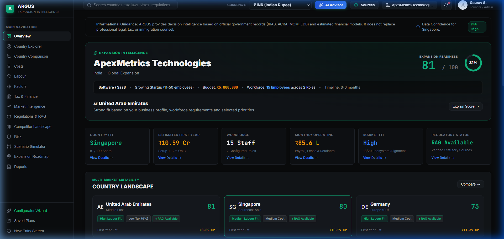
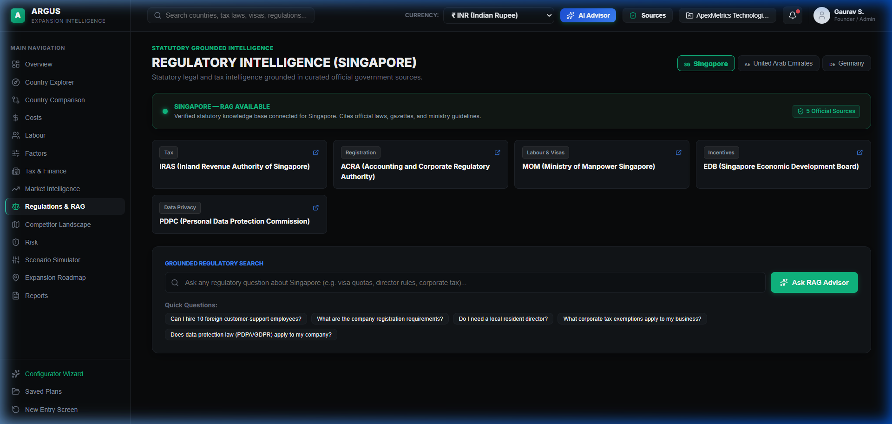

ARGUS: AI-Powered Business Expansion
Decision-Support Platform for Startups
An explainable decision-support framework synthesizing multi-attribute macroeconomic scoring, parameterized operational cost modeling, and grounded regulatory intelligence via Retrieval-Augmented Generation (RAG).
1. Introduction: The SME Cross-Border Expansion Challenge
- Severe Resource Inequality: While multinational enterprises (MNEs) retain specialized Big Four legal, tax, and market consulting counsels, early-stage startups face prohibitive consulting fees ($50k–$200k) for initial feasibility scoping.
- Heterogeneous, Disconnected Data Repositories: Critical decision inputs are distributed across disparate sources: national tax agencies, labor ministry gazettes, commercial company registries, and international macro datasets.
- High Failure Rates: Up to 60% of international market expansions suffer delays or unexpected financial burdens due to overlooked statutory compliances, foreign worker quota caps, or localized tax withholdings.
- Unified Decision Matrix: Aggregates macroeconomic indicators, local wage benchmarks, statutory visa limits, and company formation rules into a single analytical platform.
- Explicit Analytical Roles (Not a Chatbot):
Scoring & Financial Engine: Computes deterministic suitability scores and first-year CapEx/OpEx.
Regulatory RAG Layer: Semantically retrieves and explains authoritative statutory clauses with document and page citations. - Explainable Outputs: Replaces opaque single-number rankings with decomposed factor contributions and phased chronological roadmaps.
2. Literature Survey (Part 1): Regulatory RAG & Cross-Border AI
Evaluation of recent academic scholarship applying Natural Language Processing and Retrieval-Augmented Generation to statutory compliance, legal governance, and cross-border commercial transactions:
| Citation & Author | Venue & Year | Methodology / Approach | Key Scholarly Finding | Relevance & Identified Gap for ARGUS |
|---|---|---|---|---|
| J. Li and A. Zhou [1] | arXiv / 2026 Legal Informatics |
Multi-regulation RAG framework using hierarchical vector partitioning across multi-jurisdictional legal corpuses. | Demonstrated that grounded RAG reduces statutory hallucination by over 74% in cross-border digital commerce governance compared to vanilla LLMs. | Relevance: Validates document chunking and source-grounded retrieval. Limitation: Confined solely to legal compliance checks; does not model corporate setup budgets, workforce quotas, or country suitability rankings. |
| R. Singh et al. [2] | arXiv / 2026 Regulatory Sci. |
Federated AI-enabled continuously updating regulatory intelligence system (AICURIS) with domain-specific ontologies. | Temporal tracking and federated metadata tagging are essential to prevent stale regulatory interpretations during policy revisions. | Relevance: Guides our regulatory PDF ingestion pipeline, metadata schema, and version tracking. Limitation: Strictly tailored to clinical human therapeutics; lacks applicability to generalized commercial business expansion. |
| X. Chen and L. Wang [3] | IEEE / 2024 Digital Economy |
Legal analytics and NLP classification for identifying dispute risks in cross-border e-commerce operations. | AI-assisted regulatory classification reduces initial legal scoping times by 68% for international cross-border merchants. | Relevance: Confirms high demand for automated regulatory intelligence in cross-border operations. Limitation: Focuses only on post-entry disputes rather than pre-entry jurisdictional selection and holistic financial feasibility. |
2. Literature Survey (Part 2): Market Selection & Global Datasets
Review of foundational Multi-Criteria Decision Making (MCDM) theories for international market selection and multilateral indicator infrastructures:
| Citation & Author | Venue & Year | Methodology / Approach | Key Scholarly Finding | Relevance & Identified Gap for ARGUS |
|---|---|---|---|---|
| S. Sakarya et al. [4] | Int. Mktg. Rev. 2007 (Foundational) |
Quantitative and qualitative multi-criteria International Market Selection (IMS) model for emerging market entry. | Traditional IMS models over-index on historical macro indicators and fail to capture real-time regulatory flexibility and operational agility. | Relevance: Provides foundational taxonomy: Market Potential, Commercial Infrastructure, and Institutional Risk. Limitation: Static, manual indicator scoring; lacks dynamic personalization based on startup hiring needs, budget, or automated document retrieval. |
| World Bank Group [5] | Official Publ. B-READY 2024 |
Empirical regulatory benchmarking across 10 operational pillars: Business Entry, Labour, Taxation, Dispute Resolution, etc. | Replaced 'Doing Business' with balanced de jure regulatory quality and de facto public service provision indicators across 50+ economies. | Relevance: Provides standardized, authoritative indicator definitions and scoring methodology for regulatory and operational pillars. Limitation: B-READY provides aggregate macro indicators for researchers; it does not offer dynamic, firm-level expansion recommendations or cost calculators. |
| K. Brouthers et al. [6] | JIBS 2016 |
Institutional distance and Transaction Cost Economics (TCE) in digital firm internationalization. | Digital enterprises face lower physical asset friction but significantly higher regulatory and data compliance frictions across borders. | Relevance: Validates ARGUS's prioritization of data privacy (PDPA, GDPR) and local workforce requirements in target markets. Limitation: Theoretical econometric model without an actionable computational decision-support tool for startup founders. |
3. Research Gap: Grounded Synthesis from Surveyed Literature
- Gap 1 (Regulatory RAG Isolation): Existing regulatory RAG systems (Li & Zhou 2026, Singh et al. 2026) focus solely on retrieving/explaining legal clauses rather than evaluating holistic business expansion suitability or financial outlays.
- Gap 2 (Macro vs. Micro Decoupling): Benchmark datasets like World Bank B-READY 2024 provide aggregate national scores but do not automatically personalize recommendations based on a startup's industry, budget, or workforce quotas.
- Gap 3 (Absence of Joint Multi-Domain Analysis): No existing research framework simultaneously models:
[Market Demand] ⨂ [Workforce Quotas] ⨂ [CapEx/OpEx] ⨂ [Tax Regimes] ⨂ [Regulatory Compliance]
- Gap 4 (Black-Box Scoring vs. Legal Grounding): Available commercial DSS tools lack transparent mathematical attribution, while generic LLMs hallucinate statutory parameters without verifiable citations.
Development of an explainable, hybrid decision-support architecture that couples a deterministic multi-attribute scoring engine with a grounded, vector-retrieval regulatory pipeline specifically tailored to startup resource constraints.
- Personalized Micro-Scoring: Dynamically recalculates Expansion Readiness based on explicit firm-level variables (e.g., number of foreign vs. local hires, capital budget).
- Transparent Cost Modeling: Line-item CapEx/OpEx aggregation with provenance tracking: [Official Government Fee], [Dataset Benchmark], or [Model Estimate].
- Strict Verification Boundaries: RAG output is tied directly to sovereign PDFs (ACRA, IRAS, MOM, PDPC) with document and page attribution.
4. Formal Academic Problem Statement
"Early-stage ventures and small-to-medium enterprises (SMEs) evaluating international business expansion encounter severe information asymmetry and multi-attribute decision complexity. Critical determinants—including market absorptive capacity, legal incorporation formalities, statutory corporate taxation, statutory employment quotas, foreign talent visa ceilings, and initial capitalized setup expenditure—are distributed across heterogeneous, siloed, and often discordant jurisdictional repositories.
Current exploratory methodologies force decision-makers to manually aggregate disparate economic datasets and dense regulatory prose without systematic cross-border standardization, resulting in prohibitive search costs, delayed market entry, and heightened regulatory non-compliance risks. There exists an imperative academic and technological need for an integrated, explainable decision-support system that synthesizes structured macroeconomic indicators with grounded regulatory knowledge retrieval to provide personalized, mathematically transparent country suitability assessments and operational expansion roadmaps for resource-constrained startups."
Heterogeneous, non-standardized formats across national agencies, making comparative evaluation across candidate jurisdictions manual, labor-intensive, and error-prone.
Statutory quotas, foreign talent levy thresholds (e.g., Singapore COMPASS framework), and corporate residency rules that invalidate simple low-cost assumptions.
Failure of simple calculators to capture hidden mandatory costs: commercial office leases, statutory audit fees, registration capital, and mandatory benefits.
5. Research Objectives
To synthesize a unified country indicator schema integrating business environment, economic stability, taxation frameworks, and labor metrics derived from validated international repositories (World Bank B-READY, ILO, OECD, national registries).
To develop and implement a multi-attribute decision analysis (MCDA) scoring algorithm that computes an Expansion Readiness Score (0–100) parameterized by user-specified industry, workforce distribution, target objectives, and factor weights.
To formulate a transparent, multi-tier financial estimation model capable of computing first-year capitalized expenditures (incorporation, licensing, office leasing) and operational expenditures (localized salaries, statutory social security, compliance audits).
To construct a role-based labor analysis mechanism that evaluates talent availability across 14 specialized job categories, local wage benchmarks, and jurisdictional foreign-to-local worker quota constraints (e.g., Singapore COMPASS/S-Pass criteria).
To build a domain-specific Retrieval-Augmented Generation subsystem using dense vector embeddings and persistent vector storage to ingest, chunk, index, and retrieve official statutory regulatory publications (ACRA, IRAS, MOM, PDPC) with verifiable citations.
To design an explainable user interface that decomposes suitability scores into positive/cautionary drivers with milestone roadmaps, and empirically validate prototype consistency across representative cross-border scenarios.
6. Methodology: End-to-End Decision Framework
The ARGUS decision framework executes across four sequential, decoupled operational stages:
Engine B: ChromaDB Regulatory Vector RAG
- Objective: High-throughput, reproducible, zero-hallucination computation of country rankings and financial requirements.
- Inputs: Startup parameters + normalized country database.
- Outputs: Readiness metrics (Market, Labour, Cost, Regulatory, Risk, Infrastructure) + 1st-year budget ledger.
- Objective: Contextual interpretation of complex jurisdictional legal acts, tax exceptions, and visa prerequisites.
- Corpus: Official sovereign PDFs (ACRA, IRAS, MOM, PDPC).
- Outputs: Verifiable, hallucination-resistant answers tagged with primary source titles and page numbers.
6. Methodology: Algorithmic & Mathematical Modeling
The overall Expansion Readiness Score $S(C, P)$ for candidate country $C$ given profile $P$ is computed as:
- Weights $w_i$: User-normalized priority weights ($\sum w_i = 1.0$), with default priors: Market (20%), Cost (25%), Labour (25%), Regulatory (15%), Business Env (10%), Risk (5%).
- Labour Penalty $\lambda$: Feasibility assessment applies penalty deductions when requested foreign headcount exceeds sovereign visa quota thresholds.
- Cost Fit Metric $s_c$: Evaluates the ratio of founder capital budget $B$ to modeled 1st-year total cost $TC_1$:
Ratio ≥ 1.4 ➔ 19/20 (Sufficient) | Ratio < 0.7 ➔ ≤9/20 (Under-budgeted)
Total capital outlay is decomposed into four granular operational tiers:
- Setup Outlay $C_{\text{setup}}$: Statutory incorporation fees, resident director bonds, licensing fees.
- Workforce Outlay $C_{\text{workforce}}$: Localized role salaries (14 categories) + mandatory employer contributions (CPF, Social Security) + visa levies.
- Operating Outlay $C_{\text{operating}}$: Commercial physical/hybrid office leases + local utility overhead.
- Audit & Compliance $C_{\text{compliance}}$: Mandatory statutory annual corporate accounting and tax returns.
6. Methodology: System Architecture & RAG Pipeline
- Framework: React 18 with TypeScript & Vite SPA architecture.
- Design Tokens: Professional dark navy SaaS aesthetic (#14243A, #003E8F, #FFD482).
- State Stores: Real-time parametric scenario simulator and dynamic workforce planner.
- ScoringEngine.ts: Multi-factor utility calculator & explainability breakdown generator.
- CostCalculator.ts: Multi-tier CapEx/OpEx localization with currency conversion service.
- LabourService.ts: 14-role benchmark salary & visa quota compliance checks.
- Extraction: PyPDF page-by-page statutory parsing with document metadata.
- Chunking: 1,200 character chunks with 200 character sliding overlap.
- Embeddings: all-MiniLM-L6-v2 (384-dimensional dense vectors).
- Vector Store: ChromaDB PersistentClient (Cosine similarity).
- Synthesis: Google Gemini 2.5 Flash with strict grounding prompts.
7. Results: Current Prototype Capabilities & Verification
| Verified Prototype Module | Status | Demonstrated Engineering Capability |
|---|---|---|
| Startup Elicitation & Profiling | Operational | Full capture of domain, business model, budget, 14-role workforce planner, and factor priority weights. |
| Expansion Readiness Scoring | Operational | Real-time multi-factor scoring (0–100) across Singapore, UAE, Germany with explainable factor breakdown. |
| Granular Cost Calculator | Operational | Decomposes 1st-year CapEx/OpEx (incorporation, wages, rent, audit) with source provenance tags. |
| Workforce Quota Assessment | Operational | Evaluates salary benchmarks and detects foreign visa quota saturation (e.g., Singapore COMPASS flags). |
| Regulatory RAG Pipeline | Operational | Indexes Singapore statutory PDFs (ACRA, IRAS, MOM, PDPC) in ChromaDB; retrieves grounded answers with page citations. |


8. Conclusion & Future Development Scope
- Integrated Paradigm: Demonstrated the feasibility of coupling structured macro indicators (World Bank B-READY, ILO, OECD) with grounded regulatory text retrieval in a single decision pass.
- Explainable Decision Support: Eliminated black-box recommendations via decomposed multi-attribute utility scoring and auditable cost provenance tags.
- Grounded Regulatory RAG: Established a working vector retrieval architecture for Singapore corporate, tax, and labor regulations with page-level citations.
- Corpus Breadth: Regulatory RAG currently indexes Singapore statutory documents; UAE and Germany are modeled via structured configuration profiles.
- Static Policy Ingestion: Statutory gazettes are ingested via batch offline PDF parsing rather than real-time web scrapers.
- Weight Calibration: Scoring relies on multi-attribute utility theory; empirical tuning against longitudinal foreign direct investment outcomes is in progress.
Train Learning-to-Rank (LTR) algorithms (e.g., XGBoost, LambdaMART) calibrated against empirical startup expansion success/failure datasets.
Implement automated scrapers with diffing algorithms to detect sovereign legislative amendments and refresh ChromaDB indices dynamically.
Ingest and validate complete legal corpuses for additional major innovation hubs: UAE Freezones, Germany (Handelsregister), and the UK.
9. Academic References
- [1] J. Li and A. Zhou, "Multi-Regulation RAG for AI Product Counsel: A Legal Governance Framework for Cross-Border Digital Commerces," arXiv preprint arXiv:2602.04944, 2026. [Online]. Available: https://arxiv.org/abs/2602.04944
- [2] R. Singh et al., "Federating AI-related Regulations for Human Therapeutics: An AI-enabled, Continuously Updating Regulatory Intelligence System (AICURIS)," arXiv preprint arXiv:2601.18950, 2026. [Online]. Available: https://arxiv.org/abs/2601.18950
- [3] X. Chen and L. Wang, "Research on the Countermeasures of AI Technology to Promote the Sustainable Development of Cross-Border E-Commerce Business—Based on Legal Perspective," in Proc. IEEE Int. Conf. on Cross-Border Digital Economy and Commercial Law (CBDECL), 2024, pp. 112–117.
- [4] S. Sakarya, M. Eckman, and P. Y. Hyllegard, "Market selection for international expansion: Assessing opportunities in emerging markets," International Marketing Review, vol. 24, no. 2, pp. 208–238, 2007.
- [5] World Bank Group, Business Ready (B-READY) 2024, Washington, DC: World Bank, 2024. doi: 10.1596/978-1-4648-2044-1. [Online]. Available: https://www.worldbank.org/en/businessready
- [6] K. D. Brouthers, K. D. Geisser, and F. Rothlauf, "Explaining the internationalization of ibusiness firms," Journal of International Business Studies, vol. 47, no. 5, pp. 513–534, 2016.
- [7] P. Lewis et al., "Retrieval-Augmented Generation for Knowledge-Intensive NLP Tasks," in Advances in Neural Information Processing Systems (NeurIPS), vol. 33, 2020, pp. 9459–9474.
- [8] International Labour Organization (ILO), "ILOSTAT Database: Global Employment and Wage Trends," Geneva: ILO, 2024. [Online]. Available: https://ilostat.ilo.org
- [9] Organisation for Economic Co-operation and Development (OECD), "Corporate Tax Statistics: Fifth Edition," Paris: OECD Publishing, 2024. [Online]. Available: https://www.oecd.org/tax/tax-policy/
- [10] Accounting and Corporate Regulatory Authority (ACRA), "Starting a Singapore Business: Statutory Guidelines and Compliance Requirements," Singapore Government Gazette, 2024.
10. Project to EDI CO-PO Mapping
| Project Component / Activity | Mapped EDI Course Outcome (CO) | Program Outcome (PO) | Scholarly & Engineering Justification |
|---|---|---|---|
| Problem Identification & Need Analysis | CO1: Formulate complex engineering problems through structured literature and field inquiry. [Verify with official EDI syllabus] |
PO2: Problem Analysis PO4: Conduct Investigations |
Systematically investigated international business expansion frictions, cross-border regulatory fragmentation, and SME consulting cost barriers. |
| Literature Review & Benchmarking | CO2: Conduct comprehensive literature survey and evaluate technical approaches. [Verify with official EDI syllabus] |
PO4: Conduct Investigations of Complex Problems | Critically evaluated peer-reviewed research across RAG, legal informatics, and the World Bank B-READY 2024 benchmarking framework. |
| Algorithm Modeling & Scoring Engine | CO3: Design algorithmic solutions, frameworks, and system architectures. [Verify with official EDI syllabus] |
PO3: Design/Development PO1: Engineering Knowledge |
Formulated a multi-attribute utility scoring model, parametric cost estimation algorithms, and a role-based labor quota assessment framework. |
| RAG Pipeline & Software Engineering | CO4: Apply modern engineering tools, AI algorithms, and software frameworks. [Verify with official EDI syllabus] |
PO5: Modern Tool Usage PO3: Design/Development |
Implemented a full-stack React/TypeScript client alongside a Python ChromaDB vector retrieval pipeline and Gemini 2.5 Flash grounded prompt engineering. |
| System Validation & Testing | CO5: Verify system functionality against specifications and evaluate outcomes. [Verify with official EDI syllabus] |
PO2: Problem Analysis PO8: Ethics & Transparency |
Executed end-to-end scenario evaluations, verified scoring determinism, ensured transparent cost provenance, and prevented black-box model hallucination. |
| Managerial & Societal Application | CO6: Assess economic, managerial, societal, and sustainability dimensions. [Verify with official EDI syllabus] |
PO11: Project Management PO6: Engineer & Society |
Directly empowers early-stage entrepreneurs by democratizing corporate expansion intelligence and budgeting; models financial outlays and statutory compliance. |
11. Sustainable Development Goals (SDG) & Academic Defense
Target 8.3: Encourages formalization and growth of micro-, small-, and medium-sized enterprises.
Target 9.3: Enhances SME access to information, digital infrastructure, and global markets.
Target 16.6: Fosters transparent, accountable, and rule-of-law-governed institutions.
Target 17.16: Mobilizes knowledge, technology, and global data partnerships.
Thank You to the Respected Committee & Examiners
The floor is now respectfully open for Questions, Academic Evaluation & Technical Discussion.